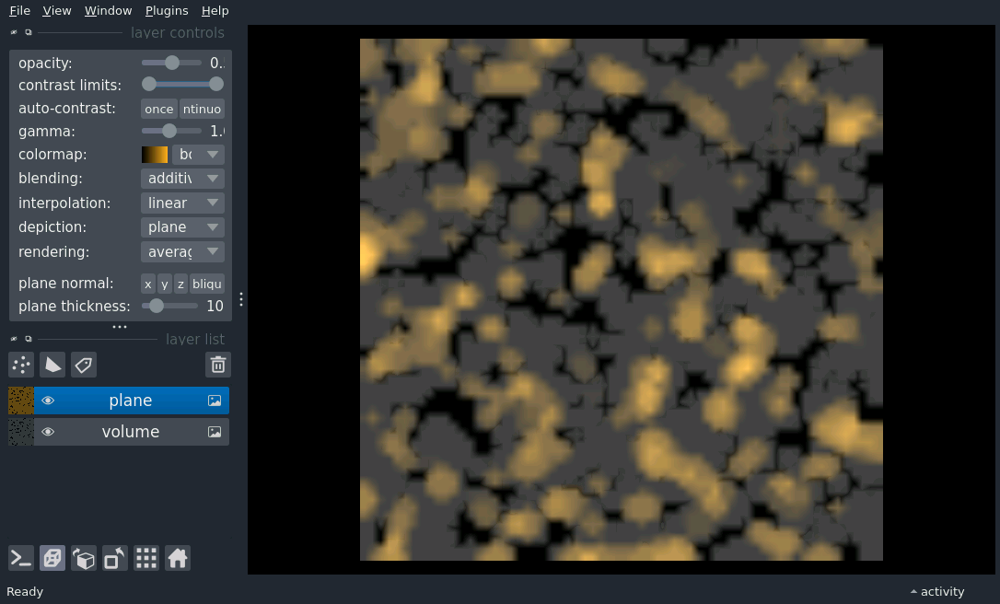

Note
Click here to download the full example code
Render plane manipulator (plugin)
An example controlling the render plane manipulator, using napari-threedee as a napari plugin.

Out:
/home/runner/work/napari-threedee/napari-threedee/src/napari_threedee/utils/napari_utils.py:38: FutureWarning: Private attribute access ('Window._qt_window') in this context (e.g. inside a plugin widget or dock widget) is deprecated and will be unavailable in version 0.5.0
visual = viewer.window._qt_window._qt_viewer.layer_to_visual[layer]
/home/runner/work/napari-threedee/napari-threedee/src/napari_threedee/utils/napari_utils.py:38: FutureWarning: Private attribute access ('_QtMainWindow._qt_viewer') in this context (e.g. inside a plugin widget or dock widget) is deprecated and will be unavailable in version 0.5.0
visual = viewer.window._qt_window._qt_viewer.layer_to_visual[layer]
import napari
from skimage import data
viewer = napari.Viewer(ndisplay=3)
# add a volume
blobs = data.binary_blobs(
length=64, volume_fraction=0.1, n_dim=3
).astype(float)
volume_layer = viewer.add_image(
blobs, rendering='mip', name='volume', blending='additive', opacity=0.25
)
# add the same volume and render as plane
# plane should be in 'additive' blending mode or depth looks all wrong
plane_parameters = {
'position': (32, 32, 32),
'normal': (1, 0, 0),
'thickness': 10,
}
plane_layer = viewer.add_image(
blobs,
rendering='average',
name='plane',
colormap='bop orange',
blending='additive',
opacity=0.5,
depiction="plane",
plane=plane_parameters
)
viewer.window.add_plugin_dock_widget(
plugin_name="napari-threedee", widget_name="render plane manipulator"
)
napari.run()
Total running time of the script: ( 0 minutes 1.698 seconds)
Download Python source code: render_plane_manipulator_plugin.py
Download Jupyter notebook: render_plane_manipulator_plugin.ipynb